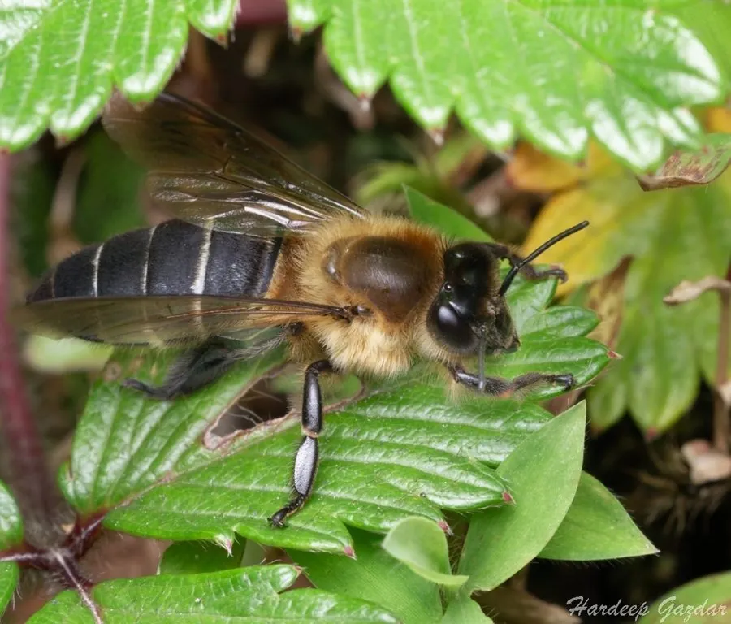

昆虫 · 动物界
黑大蜜蜂 Apis laboriosa

世界上体型最大的蜜蜂，体色黑亮，在喜马拉雅山区悬崖上筑巨型蜂巢，采集高山花蜜，蜂蜜价值很高。
- 分类
- 门节肢动物门纲昆虫纲目膜翅目科蜜蜂科属蜜蜂属
- 栖息环境
- 喜马拉雅山区高海拔悬崖和岩壁，冬季迁往低海拔
- 地理分布
- 喜马拉雅山脉及周边地区，包括中国云南、西藏和尼泊尔
- 保护级别
- 暂无评估；受栖息地变化和过度采蜜影响
物种志
黑大蜜蜂是世界上体型最大的蜜蜂，工蜂体长约 1.7–2 cm，体色黑亮，腹部有浅色环带，体毛浓密，适应高海拔寒冷环境。蜂王和雄蜂体型更大，蜂群规模可达数万只。
它分布在喜马拉雅山脉和周边高海拔山区，常在悬崖峭壁、岩石下筑大型裸露蜂巢，巢脾可达 1 m 以上，蜂群在冬季会迁移到低海拔地区越冬。黑大蜜蜂采集高山杜鹃、雪莲等植物的花蜜，产出的蜂蜜被称为岩蜜或雪蜜，价格昂贵。由于蜂巢建在悬崖上，采集蜂蜜非常危险，当地采蜜人需要攀爬悬崖。它的种群受栖息地变化和过度采集影响，需要合理保护蜜源植物和采蜜强度。
形态与习性
- 食性采集高山植物的花蜜和花粉
- 体长工蜂约 1.7–2 cm，是世界上最大的蜜蜂
- 筑巢在悬崖峭壁和岩壁下筑大型裸露蜂巢
- 习性冬季迁移到低海拔地区越冬
- 经济产岩蜜和雪蜜，蜂蜜价值很高
趣味知识
- 黑大蜜蜂是世界上体型最大的蜜蜂，工蜂接近 2 厘米长。
- 它的蜂巢常建在悬崖上，采集蜂蜜十分危险。
- 黑大蜜蜂产的岩蜜和雪蜜，是价格很高的高山特产。